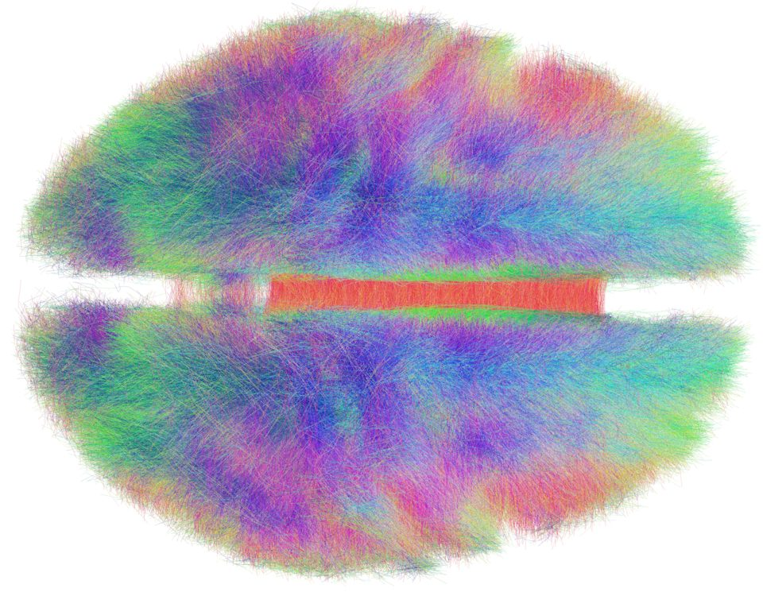

Ver el cerebro en acción
La TC y la resonancia estructurales muestran la forma del cerebro. La neuroimagen funcional muestra cómo trabaja: qué zonas se activan al hablar, recordar o sentir, y cómo se comunican entre sí. Ha transformado la neurociencia en las últimas tres décadas.
Las técnicas
| Técnica | Qué mide | Resolución espacial | Resolución temporal |
|---|---|---|---|
| RM funcional (RMf) | Cambios en la oxigenación de la sangre | Milímetros | Segundos |
| PET | Consumo de glucosa, flujo, receptores | Milímetros | Minutos |
| EEG | Actividad eléctrica | Centímetros | Milisegundos |
| Magnetoencefalografía (MEG) | Campos magnéticos de la actividad | Milímetros-centímetros | Milisegundos |
| Espectroscopia de infrarrojo cercano (fNIRS) | Oxigenación de la superficie | Centímetros | Segundos; portátil, útil en bebés |
La resonancia funcional


Cuando un grupo de neuronas se activa, llega más sangre oxigenada a esa zona, más de la que consumen (acoplamiento neurovascular). La hemoglobina con y sin oxígeno tiene propiedades magnéticas distintas, y la resonancia detecta ese cambio: es la señal BOLD, descrita por Seiji Ogawa en 1990. Ver circulación cerebral.
Es importante entender sus limitaciones:
- Mide la sangre, no directamente las neuronas, con unos segundos de retraso.
- Las imágenes de «cerebros iluminados» son estadísticas, comparaciones entre condiciones, no fotografías.
- Muchos estudios antiguos tenían muestras pequeñas y resultados difíciles de reproducir. Un famoso estudio de 2009 encontró «actividad» en el cerebro de un salmón muerto, para mostrar el riesgo de no corregir bien las estadísticas.
Uso clínico
- Antes de una cirugía de epilepsia o de tumores, para localizar las áreas del lenguaje y del movimiento y protegerlas. Ver neurocirugía.
- Detectar consciencia encubierta en pacientes que no pueden responder. Ver consciencia.
El cerebro en reposo
En 2001, Marcus Raichle describió la red neuronal por defecto: un conjunto de zonas que se activan cuando no hacemos ninguna tarea concreta, al divagar, recordar el pasado o imaginar el futuro. Se altera pronto en el alzhéimer, porque coincide con las zonas donde se acumula el amiloide. Hay otras redes en reposo: la de atención, la de saliencia, la ejecutiva.
El conectoma
El conectoma es el mapa completo de las conexiones del cerebro. Se estudia a dos escalas:
- Macroescala: la tractografía, una técnica de resonancia (imagen por tensor de difusión), sigue el movimiento del agua a lo largo de los axones y reconstruye los grandes haces de sustancia blanca. El Human Connectome Project (2009-2021) cartografió las conexiones de más de mil personas y dividió la corteza en 180 áreas por hemisferio.
- Microescala: el mapa de cada neurona y cada sinapsis. Se completó el del gusano C. elegans (302 neuronas) en 1986, el de la mosca de la fruta (unas 140.000 neuronas) en 2024 y un milímetro cúbico de corteza humana en 2024, con 57.000 células y 150 millones de sinapsis.
Aplicaciones y futuro
- Entender cómo se reorganizan las redes tras un ictus y guiar la rehabilitación.
- Planificar la estimulación cerebral profunda y la neuromodulación según las conexiones de cada paciente.
- Las interfaces cerebro-ordenador.
- Diferencias en las redes en la esclerosis múltiple, el párkinson o los trastornos psiquiátricos.
Fuentes
- Ogawa S, et al. Brain magnetic resonance imaging with contrast dependent on blood oxygenation. Proc Natl Acad Sci U S A. 1990;87:9868-72.
- Raichle ME, et al. A default mode of brain function. Proc Natl Acad Sci U S A. 2001;98:676-82.
- Glasser MF, et al. A multi-modal parcellation of human cerebral cortex. Nature. 2016;536:171-8.
- Dorkenwald S, et al. Neuronal wiring diagram of an adult brain. Nature. 2024;634:124-38.
- Shapson-Coe A, et al. A petavoxel fragment of human cerebral cortex reconstructed at nanoscale resolution. Science. 2024;384:eadk4858.